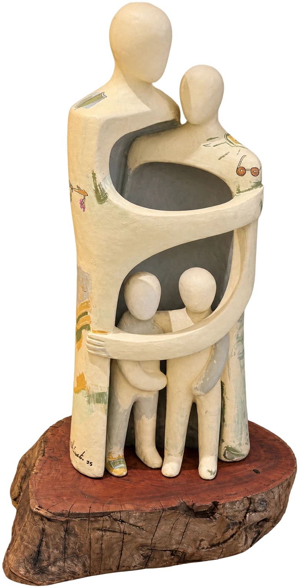
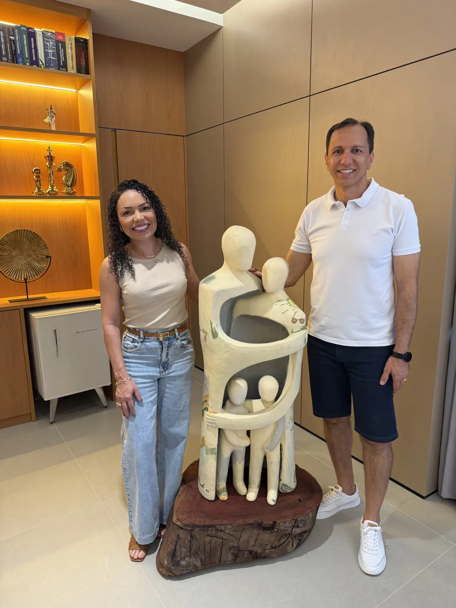

O abraço que nos une.

Um só corpo, uma só alma,
um só coração.
01 A escultura
Quatro figuras, um só gesto.
Esta escultura traduz o abraço que nos une: abraço que acolhe, sustenta e dá sentido à vida. Nela estão nossas histórias, nossas origens e nossos sonhos entrelaçados.
-
I
O abraço
A proteção recíproca que ampara e mantém a família em pé.
-
II
As quatro figuras
Um lar de paz e afeto, onde João e Gabriel são o brilho da esperança.
-
III
O tronco de raiz
Toda conquista se ergue sobre o amor e as raízes que não se rompem.

02 A família
Uma vida feita de malas e raízes.
Ele mineiro, ela rondoniense. Se conheceram em 2007, nos concursos públicos, e se casaram em 2009 com um bolo de três malas empilhadas: o retrato de uma vida de mudanças, desafios e cumplicidade.
- 2007 O encontro
- 2009 O casamento
- 2019 Chega João
- 2021 Chega Gabriel
- 2025 A escultura
-
Fabrício
Santos Dumont/MG · 1983
-
Fabíola
Porto Velho/RO · 1983
-
João
Marabá/PA · 2019
-
Gabriel
Palmas/TO · 2021
03 Valores
Firmes nos princípios, constantes no amor.
- Respeito
- Ética
- Lealdade
- Humildade
- Generosidade
“Sob as bênçãos de Deus, seguimos firmes: um só corpo, uma só alma, um só coração.”
Morrinhos/GO, novembro de 2025